Alpenglück Tauplitz
Your cosy alpine retreat in the heart of the Styrian Salzkammergut, Austria
Your cosy alpine retreat in the heart of the Styrian Salzkammergut, Austria
Nestled in the charming village of Tauplitz and watched over by the mighty Grimming, our apartment is a warm, comfortable base for both winter ski holidays and summer mountain adventures.
Wake up to fresh Alpine air, spend your days on the slopes, the lakes or the hiking trails, and come home to a fully equipped, cosy space to recharge. The apartment includes a well-fitted kitchen, bright living and dining area, comfortable bedrooms, and a modern bathroom — everything you need for a relaxing mountain stay.
Whether you are chasing powder, mountain panoramas, crystal-clear lakes or simply some peace and quiet, Alpenglück Tauplitz has you covered in every season.
Click any photo to enlarge. Use ← → to browse, Esc to close.
The apartment
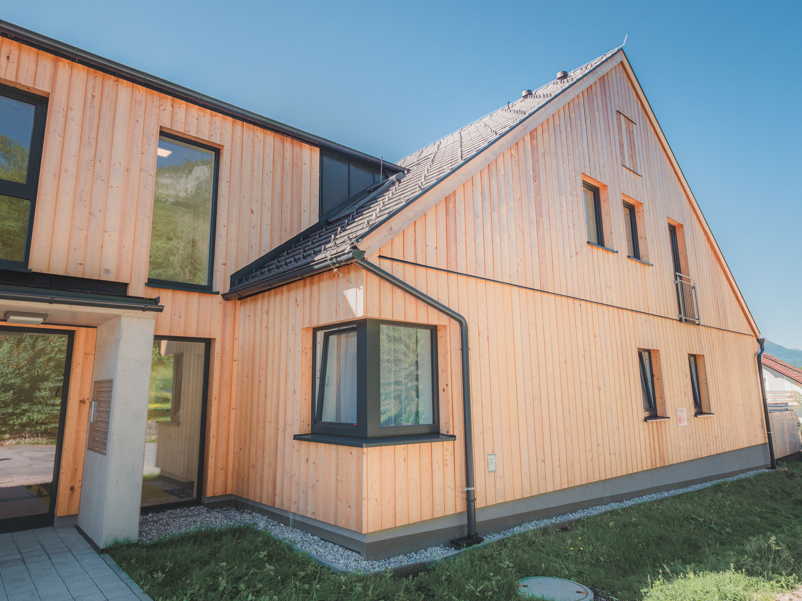
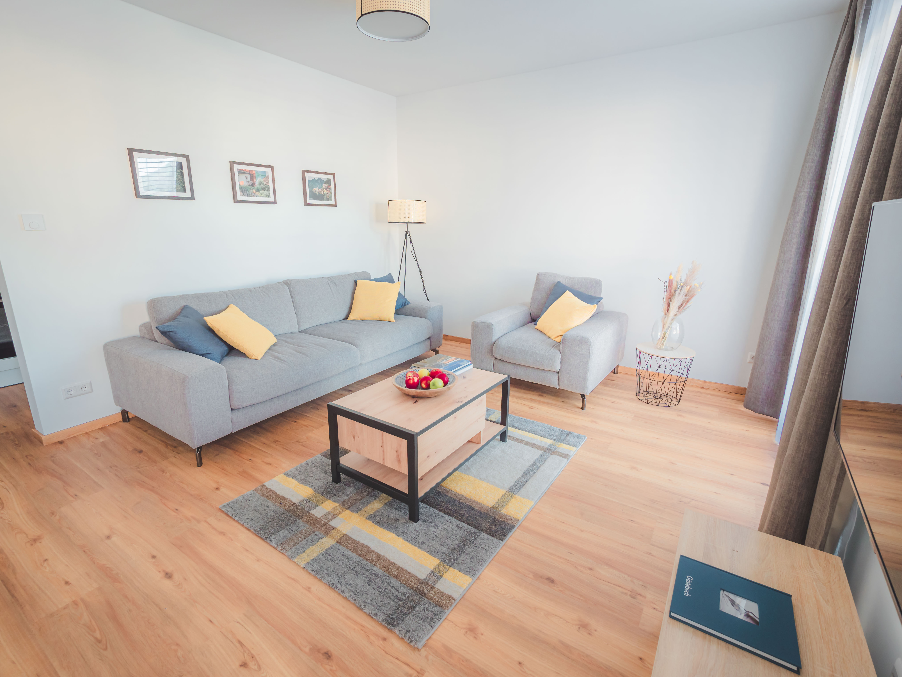
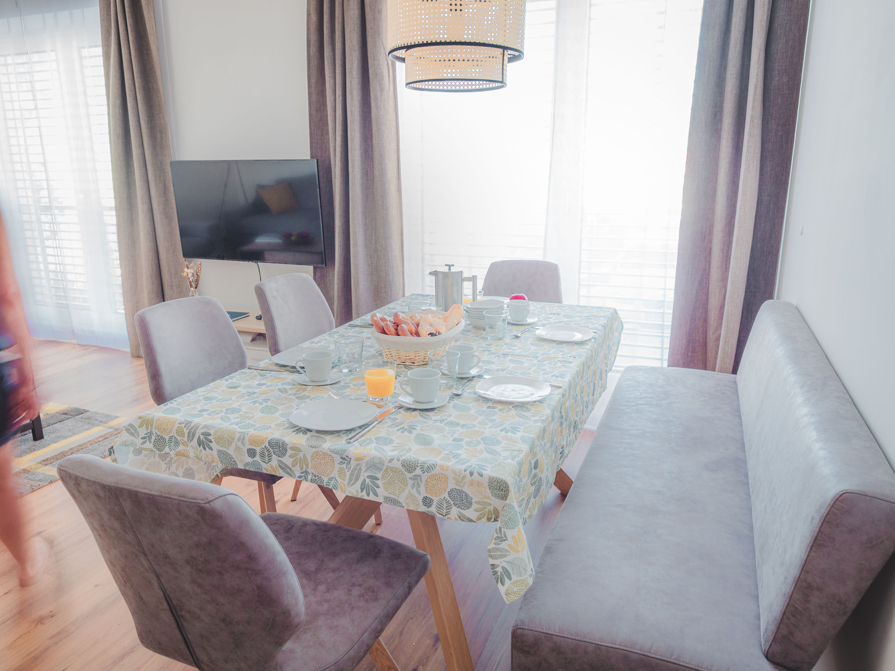
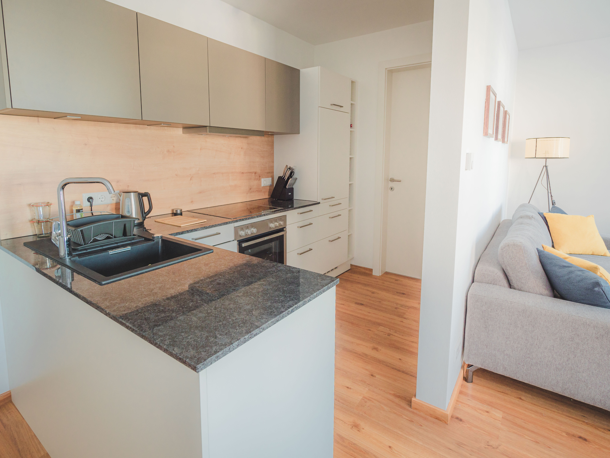
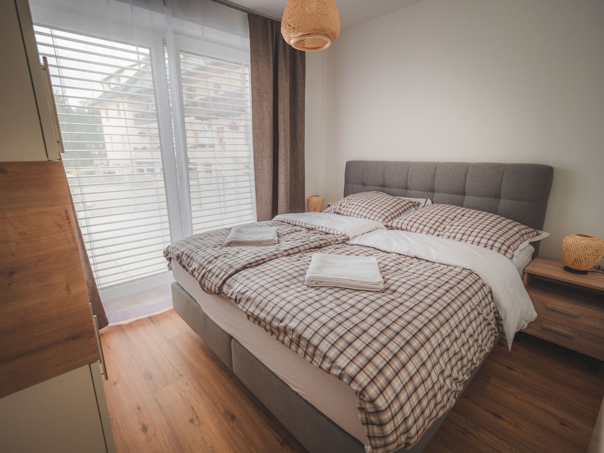
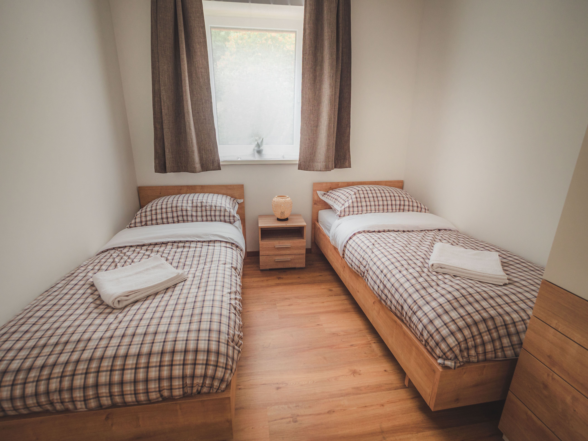
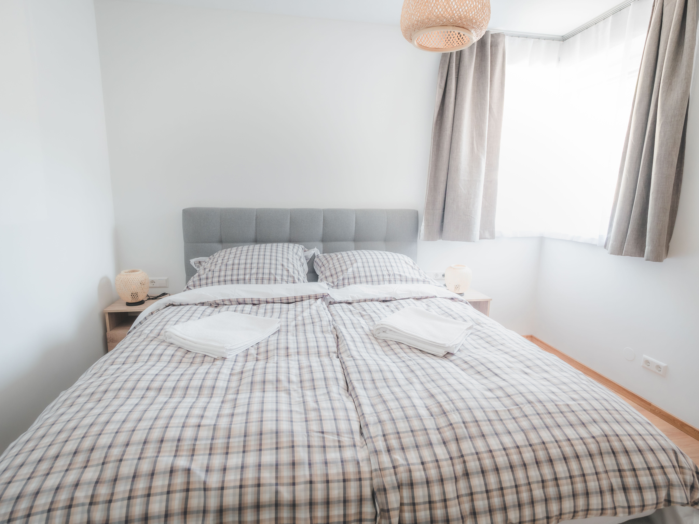
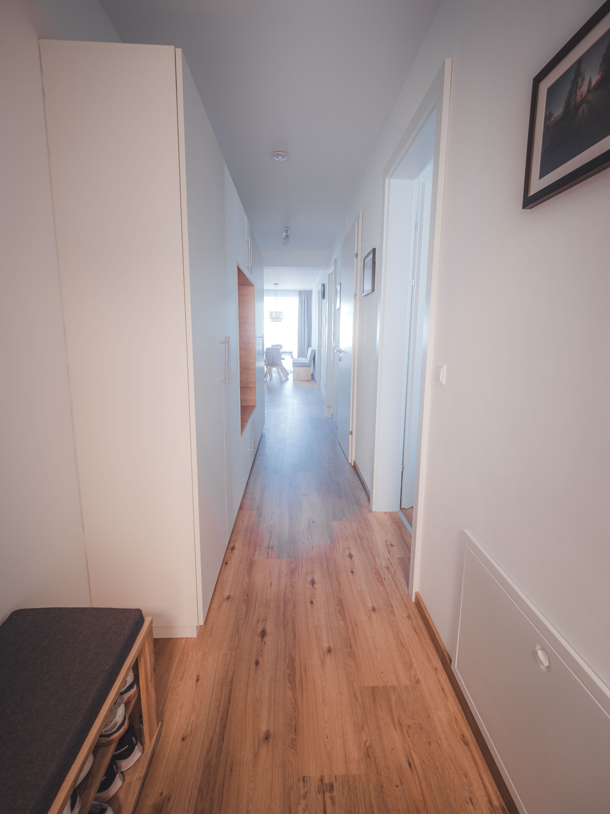
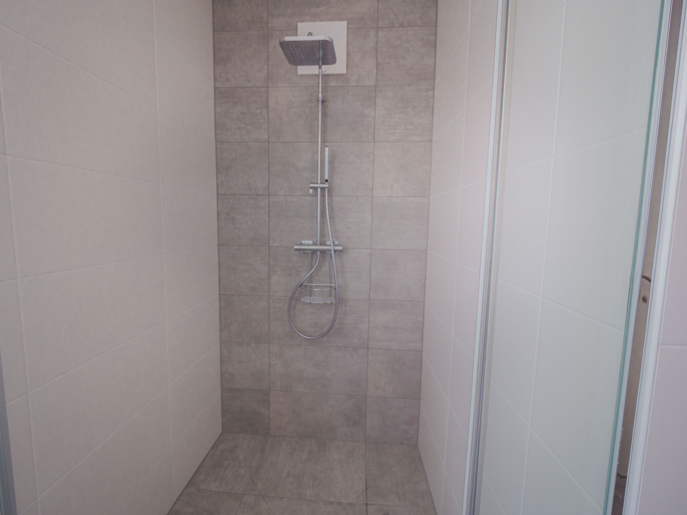
The region
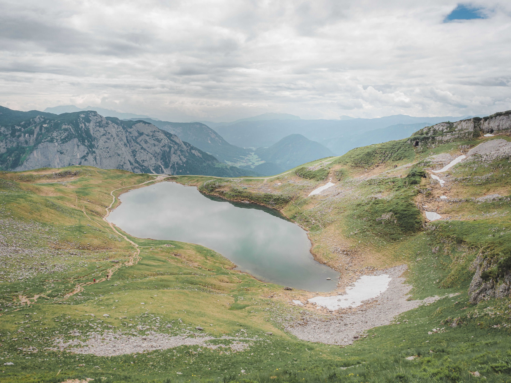
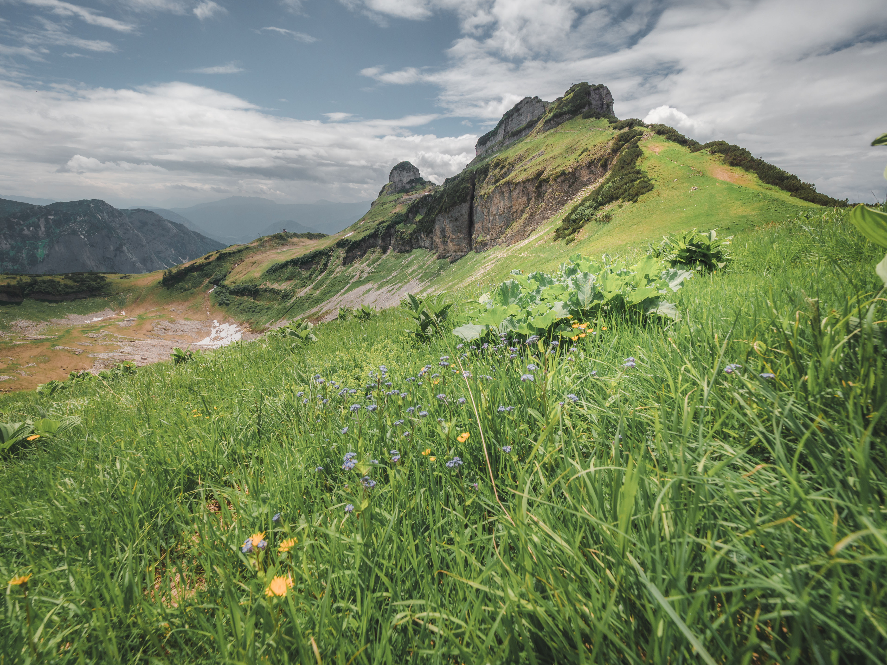


All photos were taken in and around Tauplitz.
Tauplitz sits in the Ausseerland–Salzkammergut, one of the most beautiful corners of Austria — a landscape of turquoise lakes, limestone peaks and storybook villages, much of it UNESCO World Heritage. Here is what awaits you.
One of the largest high plateaus in the Alps (1,650–1,965 m). The famous Six-Lakes Walk (6-Seen-Wanderung) winds past the Steirersee, Großsee, Schwarzensee, Tauplitzsee, Krukensee and the tiny Märchensee ("Fairytale Lake"). Reach the plateau by chairlift or the scenic toll road.
Tip: about 3–4 hours, suitable for fit families. Combine with lunch at a Alm hut.
The largest lake in Styria, the "Styrian Sea". Take the classic Three-Lakes Tour by traditional wooden boat: Grundlsee → the mysterious Toplitzsee (sunken wartime treasure legends) → the remote Kammersee, source of the river Traun.
Tip: combine the boat tour with a lakeside lunch in Gössl.
Perhaps the most photographed village in the world, clinging to a steep mountainside above its lake. Visit the world's oldest salt mine, ride up to the Skywalk "Welterbeblick" for the iconic view, and see the curious Bone House beside the church.
Tip: arrive early morning or late afternoon to beat the day-trip crowds.
Cable car from Obertraun up to Krippenstein and the thrilling 5 Fingers viewing platform over a sheer drop. Explore the Dachstein Ice Cave and Mammoth Cave, or head for the glacier with its suspension bridge and "Stairway to Nothingness".
Tip: bring a warm layer — the ice caves stay cold all summer.
Bad Aussee, at the geographic heart of Austria, is famous for its spring Narzissenfest (Daffodil Festival). Nearby Altaussee has a stunning lake, the dramatic Loser Panoramastraße, and a salt mine that hid looted artworks during WWII.
Tip: drive the Loser Panoramastraße for jaw-dropping lake views.
One of the largest ski-flying hills on the planet, near Bad Mitterndorf. Periodically hosts the Ski Flying World Championships — athletes fly over 200 m through the air. Even out of season, the scale is breathtaking to see.
Tip: a flying competition is an unforgettable spectacle to watch live.
Your nearest town for shops, cafés and restaurants — and home to the GrimmingTherme thermal spa. Perfect for soothing tired muscles after a mountain day, all under the gaze of the Grimming, the "lonely giant" peak of the region.
Tip: the ideal rainy-day option — indoor pools, saunas and relaxation areas.
Pürgg, the "Cradle of Styria" with 12th-century frescoes • the turquoise Salza reservoir • the quiet swimming lake Ödensee • neighbouring ski areas Riesneralm and Planneralm.
Tip: ask us for our personal favourites — happy to share local secrets.
Tauplitz is a small alpine village in the heart of the Styrian Salzkammergut, Austria — easy to reach by car from Belgium, the Netherlands and Germany, mostly via motorway.
Need help planning your route? Send us a message — we're happy to help.
Reserve your dates securely through one of the trusted platforms below. Both offer guest protection, clear cancellation policies, and verified reviews.
If you have stayed with us before, or are a family member or friend, you are welcome to reach out directly to arrange your stay — no platform needed:
alpenglueck.tauplitz@gmail.com
Direct bookings are reserved for known guests. First-time visitors are kindly asked to book via Booking.com or Airbnb.
Have a question about the apartment, the area, or availability? Fill in the form below and your message will open in your email app, ready to send.